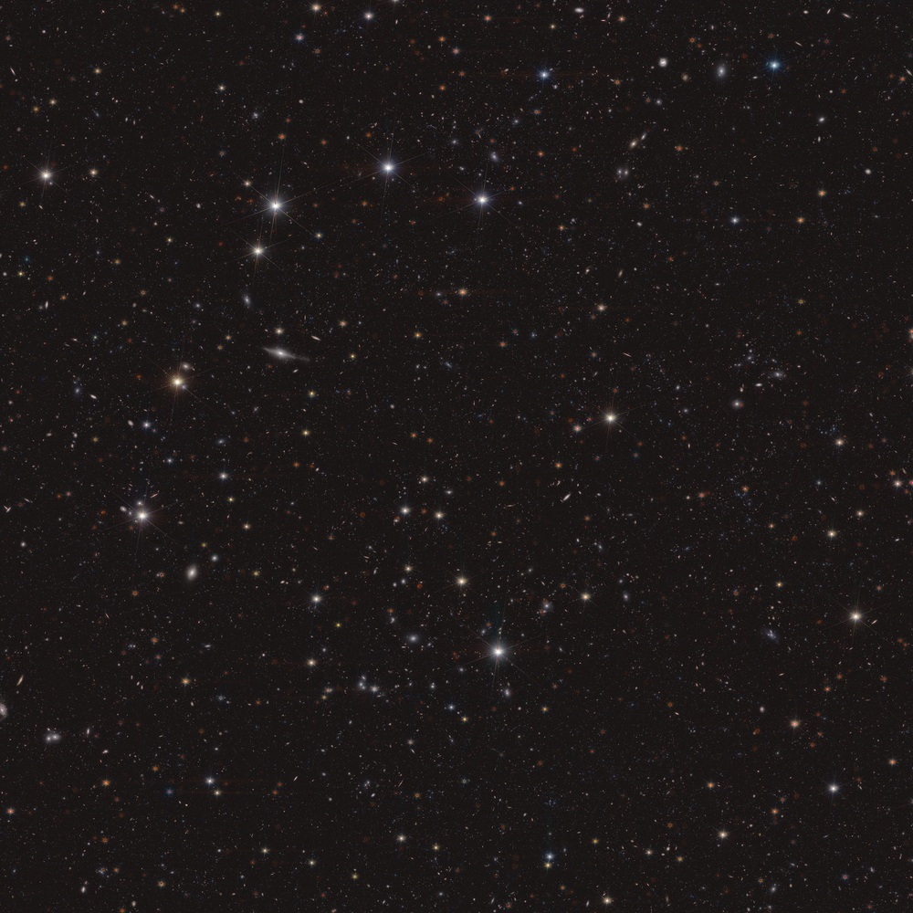
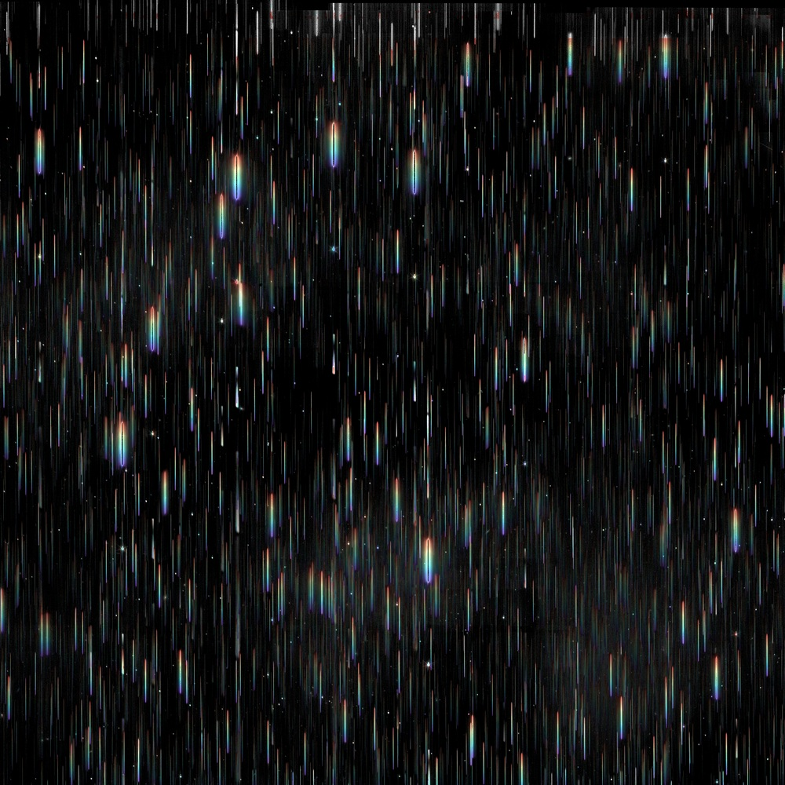

Skip to image comparison
Watch the sky image dissolve into an illustration of its light spread into spectra.

Sky image 
Spectra illustration
Sky image
Animate transition
Spectra
Sky image
The animation loops smoothly between the sky and spectra. Choose either still view to stop it. Drag to pan; pinch, scroll or use + and − to zoom. Both views stay aligned. Home fits the images.
Static previews are available if the interactive viewer cannot load.
These two supplied images show the same densely populated patch of sky. In the sky image, stars and galaxies are points or small smudges, with spikes around bright stars. The comparison illustration stretches their light into narrow vertical rainbow-like streaks called spectra.
Spectroscopy means separating light into its different wavelengths. Patterns in that light help scientists study what objects contain and estimate the distances to galaxies. The rainbow image illustrates the concept; it is not a second ordinary photograph of the sky.
The images are compared on their original, matching 3960 × 3960 pixel grids. They share a single view, so zooming and panning stay aligned. Zoom is capped at one source pixel per CSS pixel; ordinary browser zoom remains available.
The animation dissolves between the two aligned images; it illustrates the comparison rather than simulating how the instrument works. Reduced motion starts with a still sky image. Choose Animate transition to start the loop yourself.
Keyboard: focus the image and use the arrow keys to pan, + or − to zoom, H or Home to fit the images, and N for original detail. Use the view buttons to show either still image or the animated transition.
Left Up Down Right
Credit: ESA/Euclid/Euclid Consortium/NASA, image processing by B. Granett. CC BY-SA 3.0 IGO.
All images, tiles and viewer software are served from this computer. No online hosting service, external fonts or analytics are used.